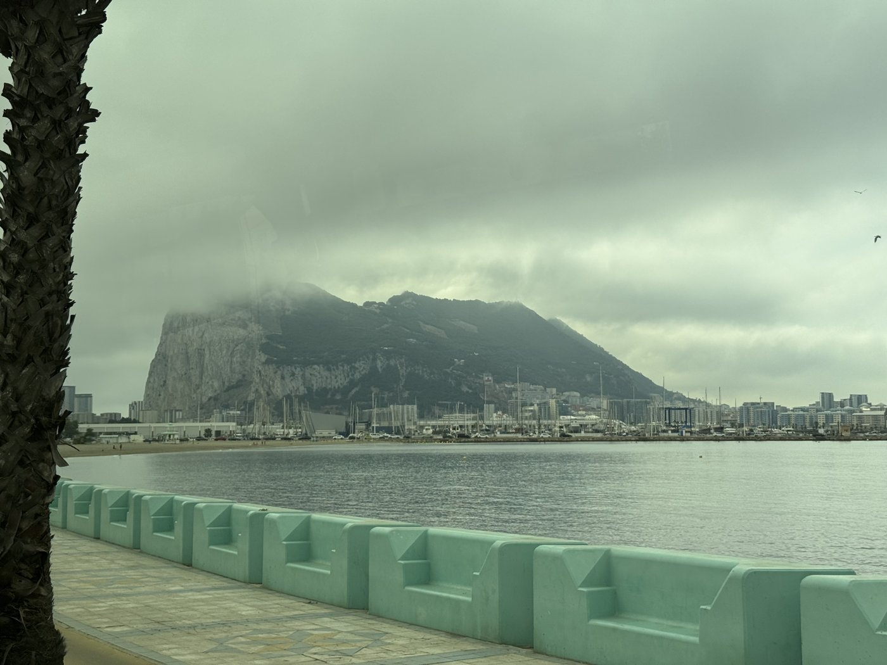
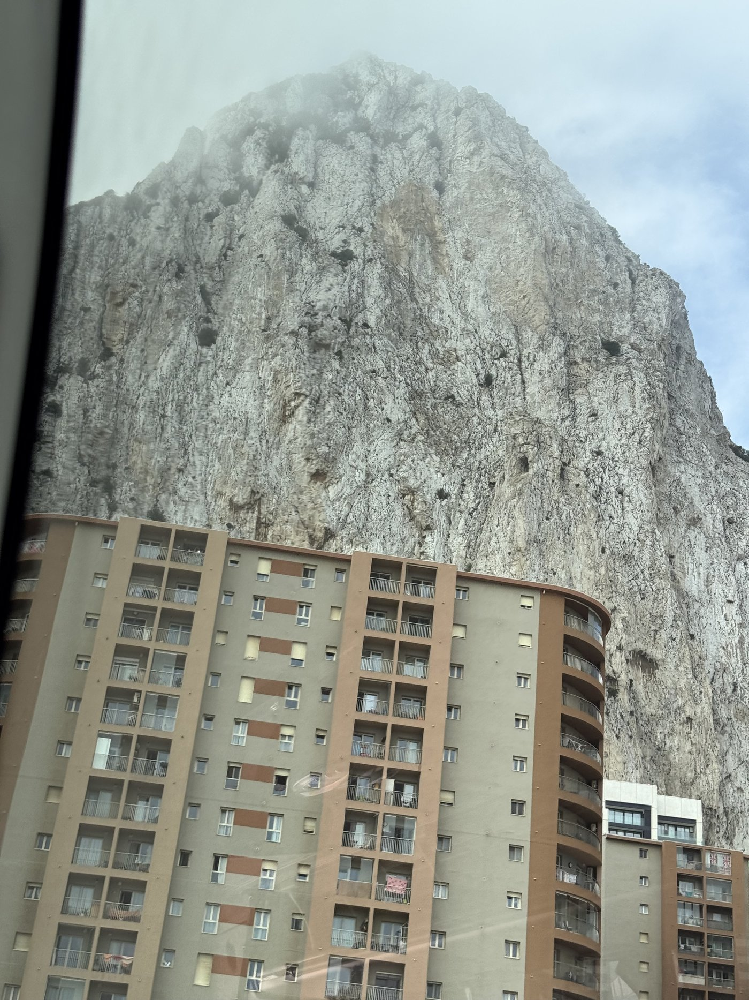
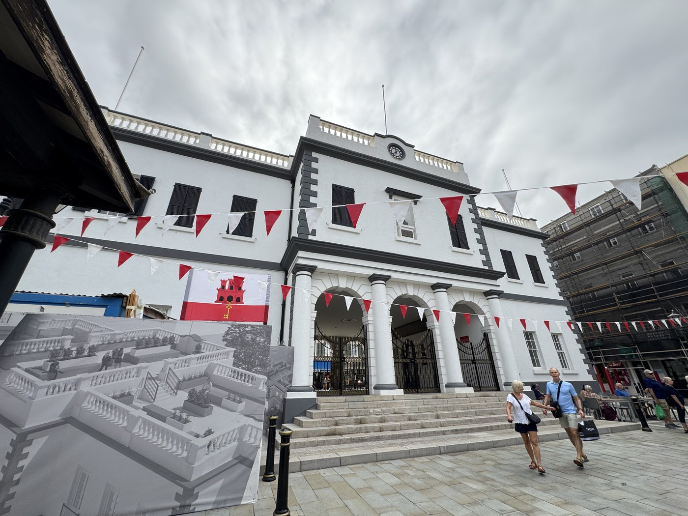
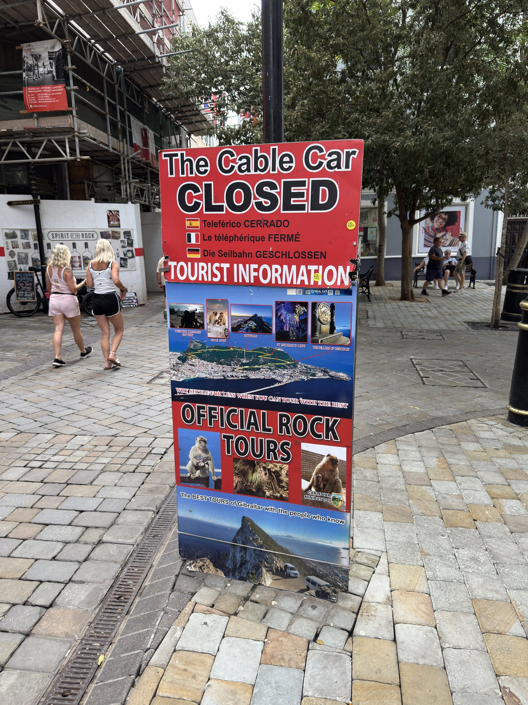
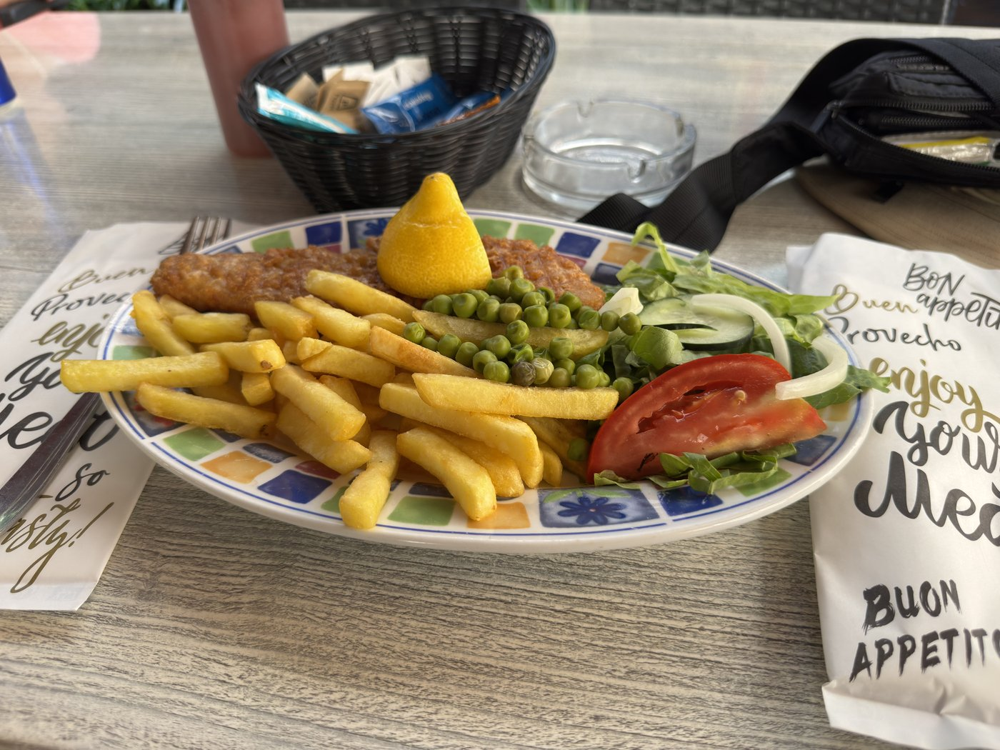
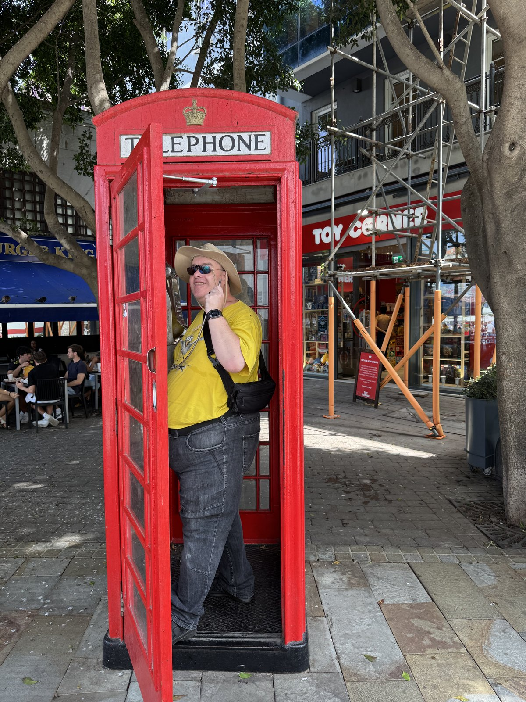

Dafür mußten wir ganz urlaubsuntypisch sehr früh aufstehen: um 6:30 klingelte der Wecker, weil die Tour um 08:25 am Bahnhof Cádiz beginnen sollte — und man bat darum, zehn Minuten vorher da zu sein.
In den Bewertungen stand schon, die Abholung könne chaotisch sein. Sie war es. Um 08:16 kam eine Sprachnachricht von Ángel, unserem Tourguide: Er verspäte sich etwas, wir sollten zur Haltestelle gegenüber dem alten Zollhaus kommen. Da waren wir eigentlich schon. An der Plaza de Sevilla gibt es allerdings fünf oder sechs Haltestellen, die alle mehr oder weniger gegenüber dem Zollhaus liegen. Ein argentinisches Paar, das dieselbe Tour gebucht hatte, verlegte zur nächstgelegenen; wir blieben, wo wir waren. Der Bus hielt dann genau zwischen unseren beiden Haltestellen.
Geklappt hat es trotzdem, und wir waren fast pünktlich unterwegs — nur um direkt vor unserem Hotel noch einmal zu halten und weitere Gäste aufzunehmen. Davon stand nichts in der Tourbeschreibung. Hätten wir es gewußt, wären wir dort eingestiegen. Bei der Rückfahrt sind wir dann genau da ausgestiegen.
Zwei Stunden durch Andalusien
Über die alte Brücke bei Cádiz, die CA-36 entlang bis Puerto Real, dann östlich über die A-408 auf die A-381, mit einem Stopp am Rastplatz bei Alcalá de los Gazules. Die kurze Pause ging für zwei Bocadillos de jamón ibérico drauf — wegen des frühen Aufbruchs war sonst kein Frühstück zu haben gewesen.

Dann Algeciras rechts liegen lassen, durch Los Barrios und San Roque nach La Línea de la Concepción, dem spanischen Grenzort.
Und da wartete die erste Überraschung: Seit August gibt es an dieser Grenze keine Kontrollen mehr. Trotz Brexit. Für die vielen Spanier, die in Gibraltar arbeiten, ist das eine enorme Erleichterung — und für uns bedeutete es, daß wir einfach durchfahren konnten. Den Paß, den ich extra eingesteckt hatte, brauchten wir an diesem Tag kein einziges Mal. Merken Sie sich das, es kommt noch zurück.
Hinein ging es nicht über die Straße, die ebenerdig die Startbahn des Flughafens kreuzt, sondern über den Umweg: Kingsway, im Bogen durch den Tunnel unter dem Rollfeld hindurch, dann Devils Tower Road. „Eng" ist für diese Stadt die Untertreibung des Jahrhunderts. Sie platzt jetzt schon aus allen Nähten, und trotzdem wird überall massiv gebaut. Unsere Fahrerin Luna verpaßte beim ersten Anlauf die Ausfahrt zum Busparkplatz — die ist auch verdammt schwer zu erkennen —, mußte bis zum nächsten Kreisel und wenden.

Tiempo libre
Ein paar Treppen hinauf, und man steht fast sofort hinter dem Bollwerk am Hauptplatz, geschmückt zum Jubiläum des Referendums, mit dem Gibraltar am 10. September für den Verbleib bei Großbritannien gestimmt hat. Ab hier hatten wir tiempo libre: Der Veranstalter ist ein EU-Anbieter und hat keine Lizenz für Touren in Gibraltar. Er darf uns absetzen und wieder einsammeln, mehr nicht.

Er legte uns allerdings nahe, uns selbst um eine „Rock Tour" zu bemühen — die wichtigsten Punkte in knapp zwei Stunden, 60 Pfund pro Person: 30 fürs Taxi, 30 für den Eintritt in die St.-Michaels-Höhle. Wir fanden das durchaus interessant und machten uns auf die Suche.
Fündig wurden wir schnell. Genauer gesagt: Es gab kein Entkommen. Die Anbieter hatten die gesamte Main Street mit Kundenstoppern abgeriegelt, die man nur mit ausgefeilten Tanzschritten umgehen konnte. Und sie hatten ein weiteres Schild aufgepflanzt: Cable Car closed. Die einzige andere Möglichkeit, ohne eine Wanderung über 400 Höhenmeter nach oben zu kommen. Die Seilbahn wird gerade modernisiert.

Mit einem Fahrer waren wir schon fast handelseinig, da tauchte aus dem Nichts eine achtköpfige Familie auf, und der Minibus war voll. Wir wurden einfach stehen gelassen. Klar: acht mal sechzig schlägt zwei mal sechzig. Ärgerlich war es trotzdem. Man vertröstete uns auf den nächsten Fahrer, der sich dann aber schwer tat, sein Auto vollzubekommen. Ein weiteres Pärchen kam dazu, dann noch eine achtköpfige Familie — der die Aussicht auf ein 480-Pfund-Loch in der Reisekasse allerdings nur ein hysterisches Lachen entlockte. Nach einer halben Stunde wurde es uns zu dumm.
Fish & Chips und vier Affen
Also liefen wir die Main Street bis ans Ende Richtung Seilbahn, machten reichlich Fotos — hübsch ist es dort wirklich, nur zu eng, zu voll und zu laut — und kehrten um. Auf dem Rückweg landeten wir im Angry Friar, einem urigen britischen Pub, zünftig mit Fish & Chips.

Danach die Main Street in die andere Richtung, ein bisschen durch die Gassen daneben, und die katholische Kathedrale von Gibraltar, die Cathedral of St Mary the Crowned.
Am anderen Ende fanden wir sogar einen Spielzeugladen, der Lego verkauft, mit einem hübschen Schneewittchen-MOC in der Auslage. Nein, gekauft haben wir dort nichts — woanders dafür reichlich. Das beste Stück ist dieser Kühlschrankmagnet: Er zeigt ganz modern vier Affen statt drei. Neben nichts sehen, nichts hören und nichts sagen gibt es jetzt auch den Smombie-Affen, den Smartphone-Zombie.

„It's too small and you're too big!"
An derselben Stelle stand eine typisch britische Telefonzelle, leider kaputt und ohne Hörer. Was mich nicht davon abhielt, ein wenig herumzuposen. Als wir gerade fertig waren — ich hielt die Tür noch in der Hand — sprachen uns zwei Jungen auf Englisch an, geschätzt elf und dreizehn, etwa zwei Jahre auseinander. Vermutlich Kinder von dort: Der Größere hatte eine Angel dabei, und allein unterwegs waren sie auch.
Jedenfalls waren die beiden felsenfest überzeugt — geht das in Gibraltar überhaupt anders? — daß ich unmöglich in diese Telefonzelle passen könne. „It's too small and you're too big!" Kindermund tut Wahrheit kund. Als ich ihnen dann das Beweisfoto zeigte, kriegten sie sich gar nicht mehr ein: „Respect! You completely shut us up!" Wir haben uns mit Fist Bump verabschiedet und uns auf den Rückweg zum Bus gemacht.

Der lange Weg zurück
Toll fand ich, daß die Rückfahrt nicht denselben Weg nahm, sondern über Algeciras, Tarifa, Vejer de la Frontera, Chiclana de la Frontera und San Fernando und über den Damm zurück nach Cádiz.
Bei Conil de la Frontera wurden wir Zeugen eines kürzlich verunfallten Kleinwagens, der auf dem Dach hinter der Leitplanke im Graben lag. Polizei und Rettungswagen waren schon vor Ort, der Verkehr wurde vorbeigeleitet. Den Verunfallten von hier aus alles Gute — hoffentlich ist es so glimpflich verlaufen wie möglich.
Zum Schluß erzählte uns Ángel noch von der Herkunft des Flamenco, der sich aus den Tänzen der puellae gaditanae im Dreieck zwischen Cádiz, Jerez de la Frontera und Sevilla entwickelt hat, mit einer Kostprobe der „Perle von Cádiz", Antonia Gilabert Vargas: Vámonos pa' Cái — öffnet YouTube in einem neuen Tab. Über die Buslautsprecher war das leider kein Hochgenuß — die waren die ganze Fahrt viel zu laut eingestellt, sogar meine Uhr hat sich über „laute Umgebung" beschwert. Das ist auch mein einziger echter Kritikpunkt an der Tour, zumal sich der Ton angeblich nicht leiser stellen ließ.
Zum Trost gab es zum Abschluß noch einen Erdbeermilchshake bei der Eisdiele Mira. Und im Hotelzimmer dann den Schreck des Tages: Mein Paß war weg. Der Paß, den wir an diesem Tag überhaupt nicht gebraucht hatten. Die Bauchtasche enthielt alles, nur nicht den vermaledeiten Paß — bis Sassi sagte: „Guck doch mal in der Hose nach." Warum ich ihn mir dort hineingesteckt hatte, weiß auch nur der Teufel.
Der verlinkte Song liegt bei YouTube, nicht hier. Ein Klick verläßt diese Seite; dort gelten andere Regeln für Cookies und Daten, und das Video gehört seinen Urhebern.